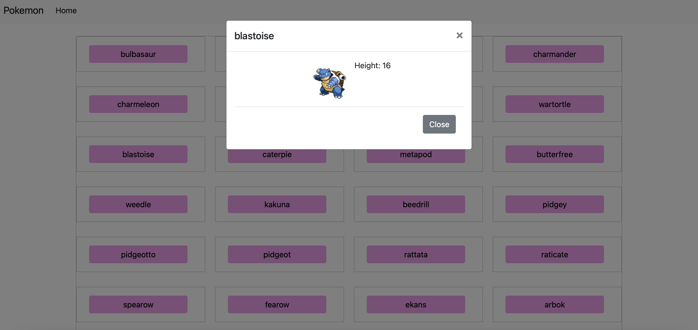

Project Description
A simple web application that displays a list of Pokémon fetched from the PokéAPI. Users can click on a
Pokémon to view more detailed information in a modal, providing an interactive way to explore Pokémon.
Links
Live Version:
Pokémon Repository
GitHub Repository:
Pokémon Repository GitHub Repository
Technologies Used
- HTML: Structure of the application
- CSS (Bootstrap): Styling and layout, making the app responsive
- JavaScript: Handles fetching and displaying Pokémon data
- Fetch API: Used for retrieving Pokémon data from the PokéAPI
Key Features
- Pokémon List: Fetches a list of Pokémon from the PokéAPI and displays them in a styled format
- Details Modal: Clicking on a Pokémon opens a modal with more detailed information
- Responsive Design: The application is responsive and works well across different devices
Additional Project Materials
- File Structure: Organized with separate directories for scripts and styles, as well
as minified files in the
dist directory for optimized performance
- Acknowledgments: Data is sourced from the PokéAPI, an external API providing
information on various Pokémon
Project Highlights
- Interactive Modal: Users can view additional information for each Pokémon in a visually appealing
modal
- Reusable Components: Scripts and styles are organized and optimized, with minified files for
production in the
dist folder
- Customization Options: Easy to modify the styles in
src/styles.css or functionality in
src/scripts.js for further personalization
Setup Instructions
- Prerequisites: You need a web browser and a local server (such as Live Server in
VSCode) to run the project.
- Installation:
- Clone the repository and navigate to the project directory.
- Open
index.html in your browser, or serve it via a local server for best
results.
Screenshot
